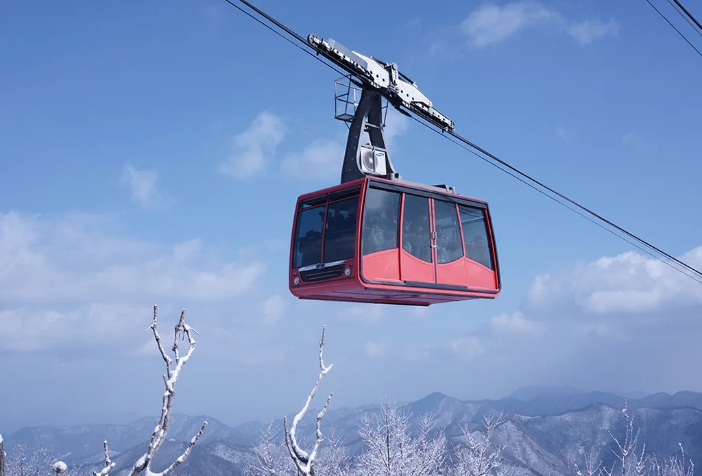
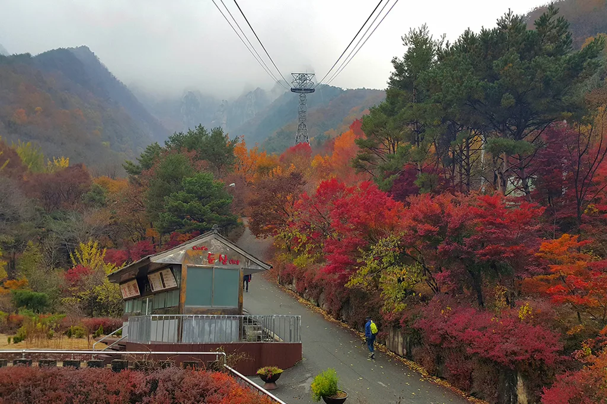
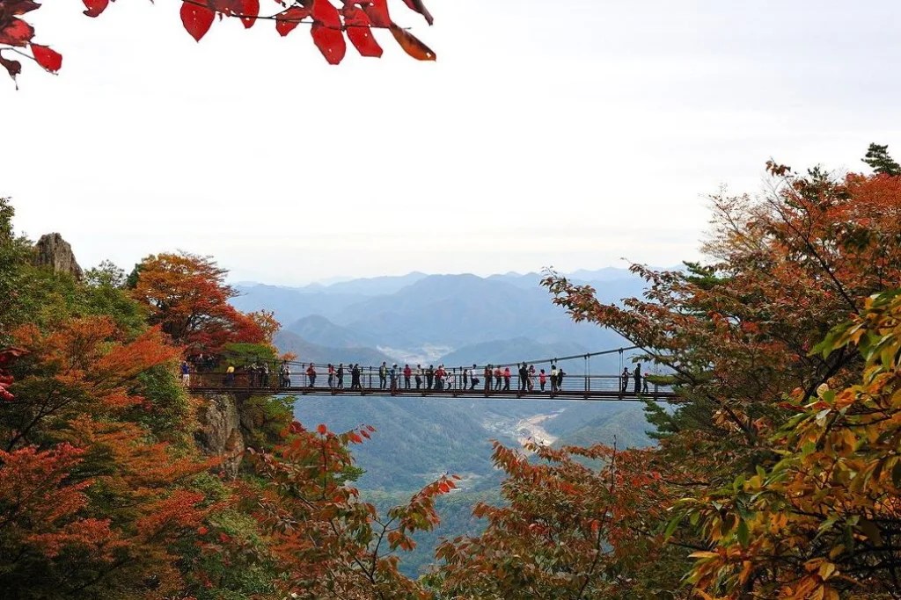
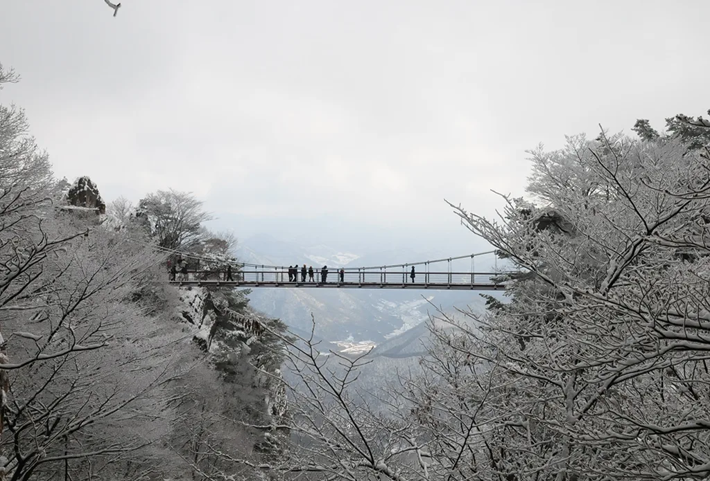
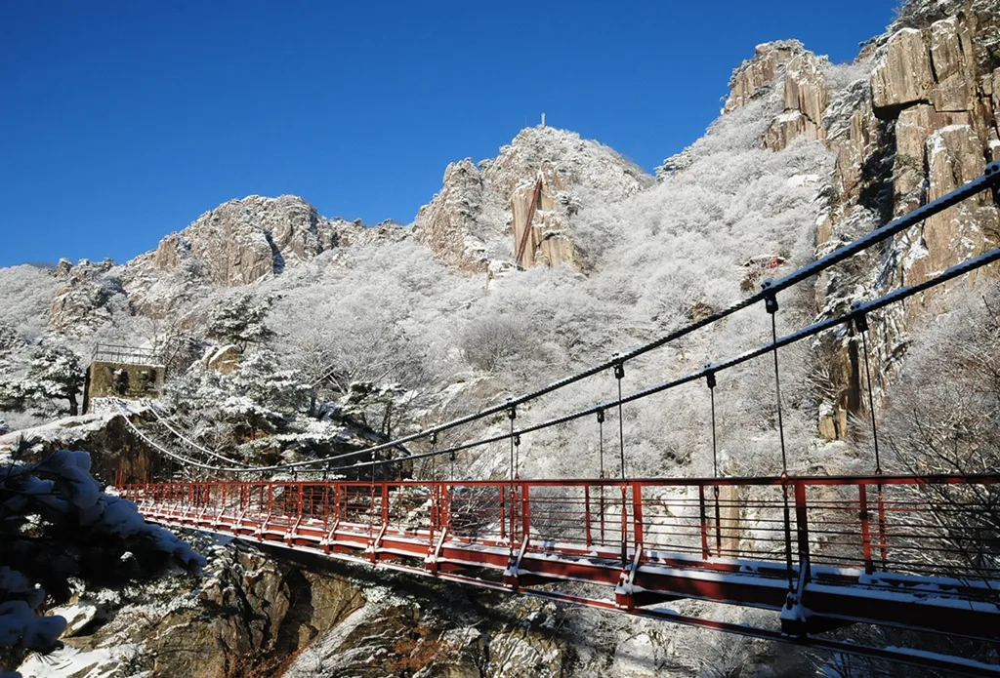
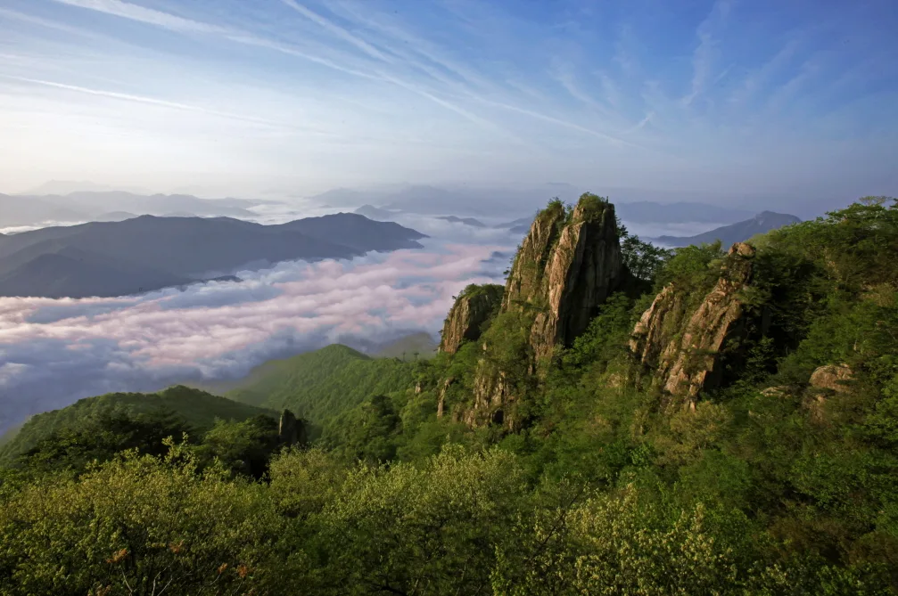
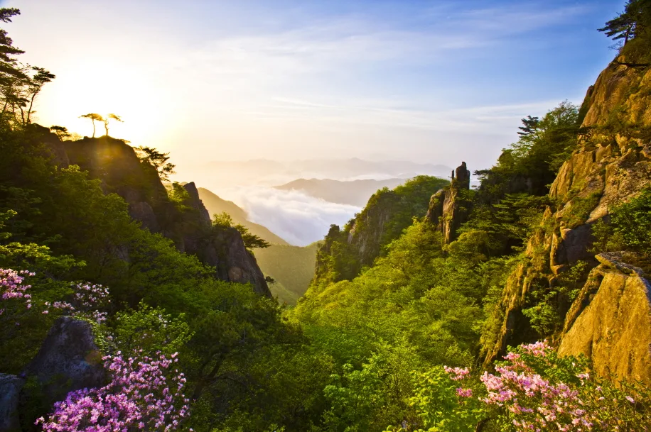

▲ 임금바위와 입석대를 잇는 대둔산 금강구름다리. 높이 81m 협곡 위에 놓인 국내 최초의 산악 현수교다 ⓒ 완주군청
전북특별자치도 완주군 운주면과 충청남도 논산시 벌곡면, 금산군 진산면에 걸쳐 솟은 대둔산(878m)은 예로부터 '호남의 금강산'이라 불려온 명산이다. 대둔산도립공원은 전북 구간(완주군)이 1977년 3월, 충남 구간(논산시·금산군)이 1980년 5월 각각 도립공원으로 지정됐으며, 완주·논산·금산 3개 시·군에 걸쳐 있어 어느 방향에서 오르느냐에 따라 풍경도, 코스도 달라진다. 가장 널리 알려진 진입로는 전북 완주군 운주면 쪽으로, 케이블카를 타면 5분 만에 산 중턱까지 오를 수 있고, 그 위로 협곡을 가로지르는 금강구름다리와 경사 51도의 삼선계단, 정상 마천대가 차례로 이어진다. 케이블카 요금과 운영 정보부터 금강구름다리·삼선계단 통행 방법, 등산 코스별 거리와 난이도, 단풍 절정 시기까지 방문 전 확인할 내용을 정리했다.
1. 대둔산케이블카 — 927m 선로, 약 5분 만에 상부역사로

▲ 대둔산케이블카는 선로길이 927m·경사 23도 구간을 약 5분 만에 오르는 왕복식 케이블카로, 2대의 곤돌라가 서로 교행하며 운행한다 ⓒ 대둔산케이블카
대둔산케이블카는 전북 완주군 운주면 대둔산공원길의 하부역사에서 출발해 선로길이 927m, 경사 23도 구간을 오른다. 1990년 11월 운행을 시작했으며, 왕복식 곤돌라 2대가 중간에서 서로 교행하는 방식으로 최대 50명까지 태우고 약 5분 만에 상부역사에 닿는다. 상부역사에서 내려 조금만 걸으면 금강구름다리와 삼선계단, 정상 마천대로 이어지는 탐방로가 시작된다. 매표는 현장에서 순차적으로 이뤄지며 사전 온라인 예약은 불가능하다.
| 구분 | 대인 | 대인 할인 | 소인 | 소인 할인 |
|---|---|---|---|---|
| 왕복 | 16,500원 | 15,000원 | 13,000원 | 12,500원 |
| 편도 | 13,500원 | 12,500원 | 11,000원 | 10,000원 |
단체(30명 이상)·경로·장애인·국가유공자·완주군민은 왕복 기준 1,500원 할인이 적용되며(중복 할인 불가, 확인증 제시자 본인에 한함), 운행시간은 평일·주말 모두 오전 9시부터 오후 5시 50분까지로 매표는 종료 20분 전 마감된다. 기본 배차간격은 20분이며 대기 인원에 따라 상시운행으로 전환될 수 있다. 요금과 운영시간은 시기에 따라 조정될 수 있어 방문 전 전화(063-263-6621~2)로 확인하는 편이 정확하다. 대둔산도립공원 자체의 입장료와 주차료는 무료이며, 케이블카 하부역사 인근 주차장은 약 1,000대를 수용한다. 입산 가능 시간은 오전 7시부터 오후 6시 30분까지다.
대둔산케이블카 공식 홈페이지에서 확인 가능
▲ 단풍철 대둔산케이블카 하부역사 일대. 1990년 11월 개통한 이래 완주군 운주면과 산 중턱을 잇고 있다 ⓒ 대둔산케이블카
2. 금강구름다리 — 국내 최초 산악 현수교, 협곡 위 81m

▲ 금강구름다리를 건너는 탐방객들. 길이 50m·폭 1.2~1.5m 구간이 협곡 사이에 걸려 있어 걸을 때마다 흔들림이 느껴진다 ⓒ 대둔산케이블카
금강구름다리는 임금바위와 입석대 두 암봉을 잇는 높이 81m, 길이 50m의 철제 현수교다. 1985년 9월 27일 처음 설치돼 산에 놓인 국내 최초의 현수교로 꼽히며, 이후 노후화로 2021년 8월 폭을 1.2m에서 1.5m로 넓혀 재설치했다. 발아래로 까마득한 협곡이 그대로 드러나 다리를 건널 때마다 다리가 살짝 흔들리는 스릴을 느낄 수 있고, 협곡 사이로 펼쳐지는 기암절벽 풍경 덕분에 대둔산에서 가장 사진이 많이 찍히는 명소로 꼽힌다.

▲ 눈 덮인 금강구름다리. 사계절 내내 개방되지만 우천·결빙·강풍 시에는 안전을 위해 통행이 제한될 수 있다 ⓒ 대둔산케이블카
3. 삼선계단 — 경사 51도, 127개 철계단은 상행 일방통행

▲ 삼선계단으로 오르는 길목에서 바라본 금강구름다리와 암봉 능선. 다리를 건너 약수정을 지나면 경사 51도·127개 철계단인 삼선계단이 이어진다 ⓒ 대둔산케이블카
금강구름다리를 건너 약수정을 지나면 만나는 삼선계단은 길이 36m, 경사 51도에 이르는 127개의 붉은 철계단이다. 금강구름다리와 함께 1985년 설치됐으며, 거의 수직에 가까운 경사 탓에 다리가 후들거린다는 후기가 많은 대둔산 최고의 스릴 구간이다. 계단 폭이 좁고 경사가 급해 상행 전용 일방통행으로 운영되며 하행은 금지된다. 우천·결빙·강풍 등 기상 상황에 따라 통제될 수 있고, 계단이 부담스러운 경우 구름다리를 건넌 뒤 갈림길에서 경사가 완만한 우회 탐방로를 따라 마천대까지 오를 수 있어 어린이 동반 가족이나 등산 초보자에게도 대안이 된다.
4. 마천대 정상과 등산코스 — 완주 쪽 1코스가 2.3km

▲ 운해에 잠긴 대둔산 능선. 마천대 인근 전망대에서는 이른 아침 구름바다 위로 솟은 기암들을 볼 수 있다 ⓒ 완주군청
삼선계단을 오르면 대둔산 정상인 마천대(878m)다. 완주군 쪽에서 오르는 코스는 크게 세 갈래로 나뉜다. 대둔산 주차장에서 느세골·동심바위·금강구름다리를 거쳐 마천대까지 오르는 1코스는 2.3km·약 1시간 40분이 걸리며, 케이블카를 이용하면 상부역사에서 마천대까지 0.8km·약 40분으로 단축된다. 용문골입구에서 칠성봉전망대를 지나는 2코스는 2.4km·약 1시간 50분, 안심사에서 출발하는 3코스는 3.4km·약 2시간 20분으로 가장 길고 완만하다. 대둔산호텔에서 기동마을까지 이어지는 은하수길(3.4km·약 1시간 20분)은 산책로에 가까워 가볍게 걷기 좋다. 충청남도 논산·금산 쪽에서 진입하는 코스도 5개가 더 있으며 소요시간은 2시간 30분~3시간대로 다소 길다.
| 코스 | 구간 | 거리 | 소요시간 | 난이도 |
|---|---|---|---|---|
| 1코스 | 주차장→느세골→동심바위→구름다리→마천대 | 2.3km | 약 1시간 40분 | 중 |
| 1코스(케이블카 이용) | 상부역사→구름다리→삼선계단→마천대 | 0.8km | 약 40분 | 하 |
| 2코스 | 용문골입구→칠성봉전망대→마천대 | 2.4km | 약 1시간 50분 | 중 |
| 3코스 | 안심사→마천대 | 3.4km | 약 2시간 20분 | 상 |
| 은하수길 | 대둔산호텔→기동마을 | 3.4km | 약 1시간 20분 | 하 |
5. 대둔산 단풍철과 사계절 풍경 — 절정은 10월 하순

▲ 봄철 진달래가 만개한 대둔산 능선. 가을 단풍뿐 아니라 사계절 내내 색다른 풍경을 보여준다 ⓒ 완주군청
대둔산은 사계절 내내 찾는 이가 끊이지 않지만, 가장 붐비는 시기는 역시 가을이다. 단풍은 보통 10월 21일 전후로 절정을 맞으며, 해에 따라 10월 말까지도 붉고 노란 단풍이 이어진다. 기암절벽 사이로 물든 단풍과 금강구름다리·삼선계단이 어우러지는 풍경 때문에 단풍철 주말에는 케이블카 탑승을 위해 긴 줄이 늘어서는 경우가 많아 오전 일찍 도착하는 편이 여유롭다. 봄에는 진달래와 철쭉이 능선을 물들이고, 겨울에는 눈꽃과 상고대로 덮인 삼선계단과 구름다리가 별도의 볼거리가 된다. 충남 논산시 쪽에서는 대둔산 자락에서 흘러내린 물줄기가 모이는 탑정호를 함께 둘러보는 코스도 인기가 있다.
6. 대둔산 케이블카·금강구름다리·삼선계단, 가기 전 체크리스트
✅ 대둔산 케이블카·금강구름다리·삼선계단, 가기 전 체크리스트
· 대둔산도립공원은 전북 완주군과 충남 논산시·금산군에 걸쳐 있으며, 입장료·주차료는 무료(입산 가능 시간 07:00~18:30)
· 케이블카는 927m 선로를 약 5분에 오르며, 대인 왕복 16,500원·편도 13,500원(공식 홈페이지 기준), 운행시간 09:00~17:50, 사전 온라인 예약 불가
· 금강구름다리는 높이 81m·길이 50m의 국내 최초 산악 현수교, 2021년 8월 폭을 넓혀 재설치
· 삼선계단은 경사 51도·127개 철계단으로 상행 일방통행, 우천·결빙·강풍 시 통제될 수 있고 완만한 우회로도 있음
· 정상 마천대(878m)까지 완주군 1코스는 2.3km·약 1시간 40분, 케이블카 이용 시 0.8km·약 40분
· 단풍 절정은 10월 21일 전후, 주말·단풍철에는 오전 일찍 도착하는 편이 여유로움